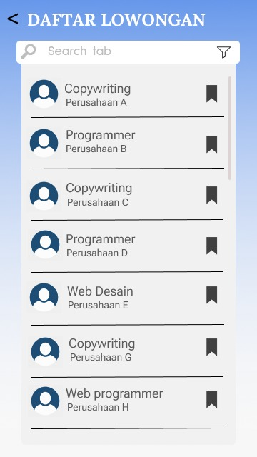

Aplikasi Pencari Lowongan Kerja Freelance berbasis mobile
by Tim Niasih
Deskripsi Aplikasi
Job Search
Job Search adalah pada pandemi covid-19 memberikan dampak pada seluruh lapisan masyarakat indonesia, khusus nya pada masyarakat yang terpaksa diberhentikan dari pekerjaan nya maupaun masyarakat yang yang membutuhkan biaya tambahan ditengah pertumbuhan ekonomi yang semakin meningkat. Kami terdoring untuk membantu masyarakat terdampak dengan membuat aplikasi yang memudahkan masyarakat dalam mencari pekerjaan. Dengan adanya aplikasi job search freelance ini diharapkan akan sedikit membantu mereka yang sedang kesulitan dalam mencari pekerjaan.
Tujuan apliasi job search
Job Search - merupakan berbasis mobile yang berfokus untuk membantu mempermudah mencari pekerjaan freelance. Target penguna aplikasi ini yaitu para pencari kerja freelace diseluruh indonesia dan perusahaan yang membutuhkan SDM untuk bekerja freelance.
Desain Fitur pada Aplikasi
Pada aplikasi ini terdapat beberapa fitur yaitu:
- Fitur SignUp & SignIn,
- Fitur Home
- Fitur Daftar Lowongan Kerja
- Fitur Notifikasi
- Fitur Filter
- Filter History
- Fitur Forum Diskusi.
Desain Fitur Sign Up
Pada sign up, dimana jika seseorang belum memiliki akun maka bisa create akun pada halaman sign up dengan memasukkan username, email, password dan konfirmasi password.

Desain Fitur Sign in
Pada sign in, jika sebelumnya sudah melakukan create account maka pada halaman sign in masukkan email dan password, selanjutnya aplikasi sudah dapat digunakan.

Desain Fitur Home
Halaman ini merupakan tampilan utama pada saat pertama kali masuk atau login. Pada halaman home ini, pengguna dapat melihat daftar lowongan kerja yang terbaik berdasarkan penilaian banyak orang. Setelah itu pada halaman home ini juga kita bisa melihat ada berapa lowongan pekerjan yang sudah kita keep serta kita dapat mencari sendiri lowongan pekerjaan sesuai yang kita mau melalui pencarian.

Desain Daftar Lowongan Kerja
